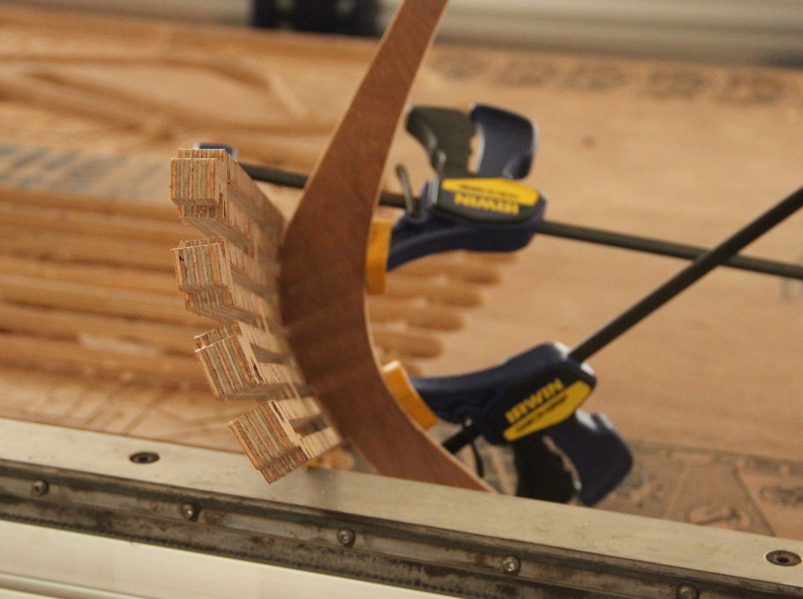
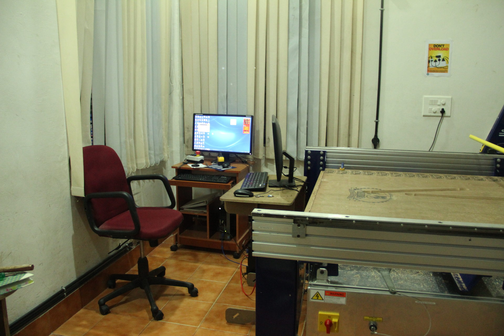
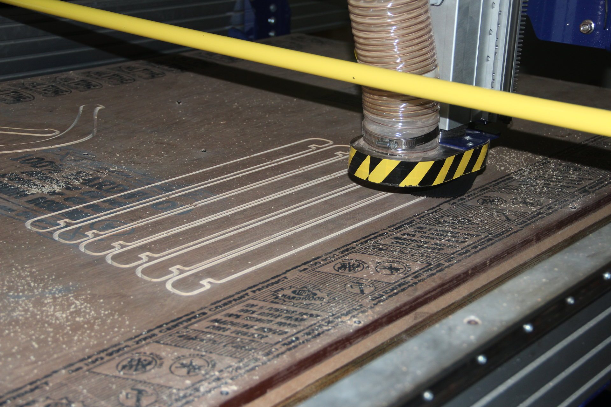
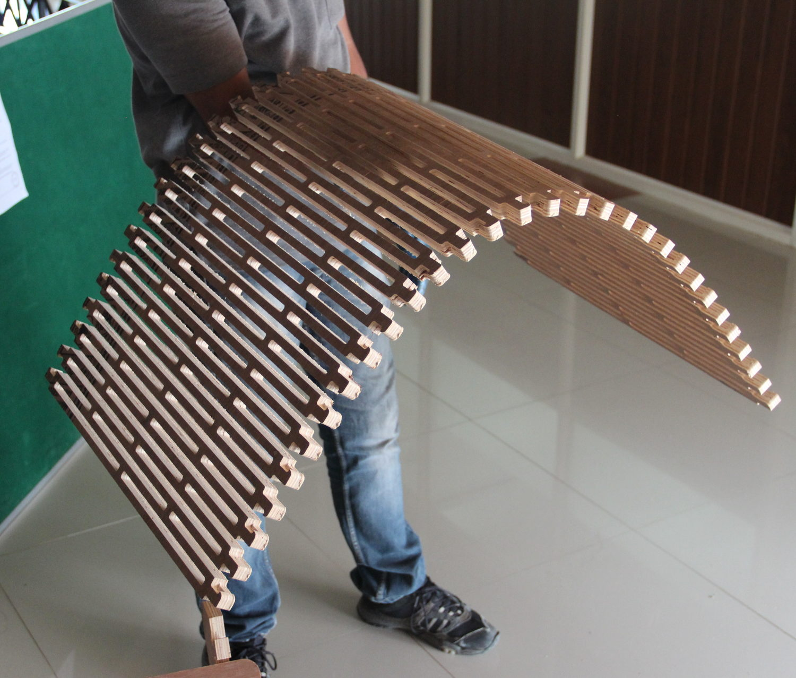
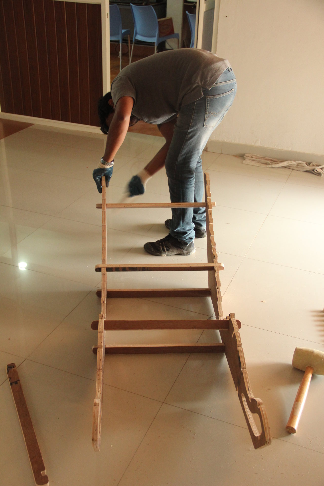
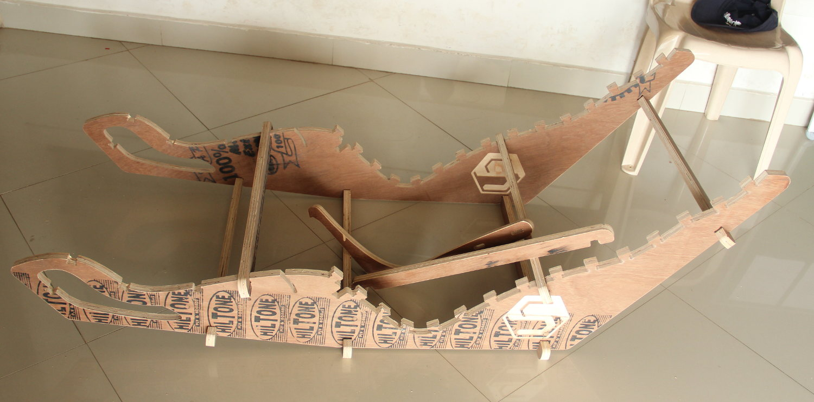
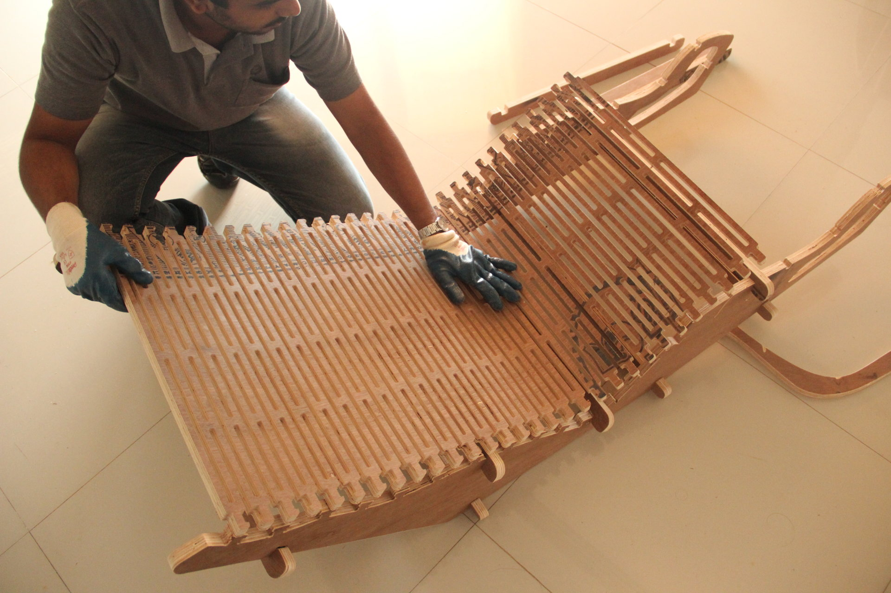
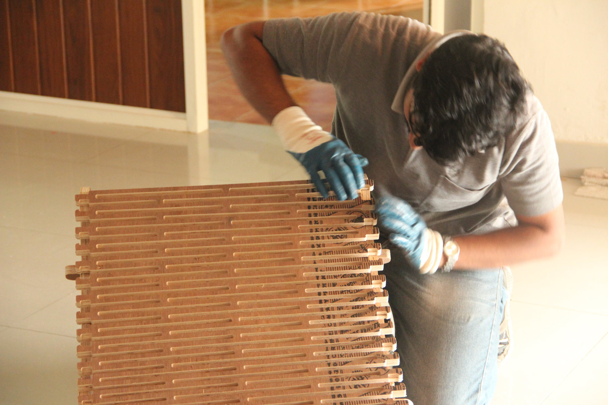
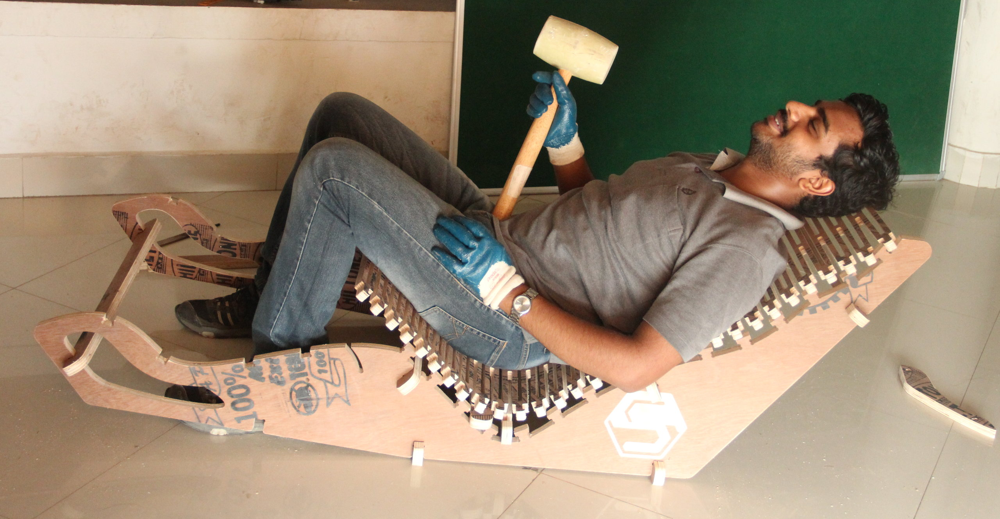

Task is to make something big using CNC Router, if the lab has a ShopBot then use that, else use some other large CNC machine to make some relativity large object. Plywood or similar
material could be used.
A Gaming Chair for Work.
I'm planning to make a chair, like,
Emperor Chair by
MWE Lab.Another Interesting Design.
'Rapid Prototype'
What I'm planing to make.
The first part of the figure is made using some measurements I made, like my height, knee to ankle length, angle to waist etc. But this way, I had no option to check if it suits my
application without actually making a prototype.
The second part of the picture is made with the the help of my friends
Yadu
and
Rashid. Rashid supported me from the back and Yadu tool photographs of me from the side. The cardboard sheet in the background is exactly 30" wide, so I have some
known reference to scale the image. Then the image was cropped and exported to Inkscape, which I used to draw the shape of the chair.
Redesign
Our instructor Fransico and my brother in law who is an orthopediatrician had a few suggestions. Also I myself thought this chair is not 'lazy' enough for me!
So I redesigned.
Rashid supporting me, a quick 'prototype'. Notice the scale on my thigh, this is a reference object, object with known length. Yadu is the 'photographer'.New design with more obtuse angles and better curves to support the back. The scale is 1/10th.
I'm planning to cut two pieces of this shape and a
Flexure structure on the top. The length for which (the longest piece) is also given in the previous diagram. A simple OpenScad code has been written to generate the
flexure patterns.
module copy_tran(vec=[5,5,0])
{
children();
translate(vec) children();
}
sd = 1; //diameter and the width of the slots in flexure
sl = 10; //length of the flexure slots
fw = 50; //total width of the flexure
fl = 200; //total length of the flexure
sepslotx = 6; //spacing between slots along x
sepsloty = 3; //spacing between slot along y
$fn = 64; //smoother render, this number gives how many frangments are used for a circle
difference ()
{
translate ( [ 0, -sepsloty] )
square ( size = [ fw, fl], center = false);
for ( i = [0 : 3])
{
for ( j = [0 : 20])
{
copy_tran(vec=[i*(sl + sepslotx), 2*j*sepsloty, 0])
copy_tran(vec=[(sl + sepslotx)/2, sepsloty, 0]) //duplicate and translate the copy
union()
{
square ( size = [ sl-sd, sd ], center = true );
translate ( [(sl-sd)/2, 0, 0]) //right circle
circle ( d = sd );
translate ( [-(sl-sd)/2, 0, 0]) //left circle
circle ( d = sd );
}
}
}
}
The output of the above code.
More R&D
I was skeptical about my design, not the shape but the dimensions. Also I had to choose a good flexure pattern, and we are running out of plywood for any some major testing. So I started
to search internet for similar designs, or designs that use the 'living hinge' design.
I found a few interesting resources.
I also found a nice build log for
here. The files are available at
Thingiverse, a nice design by
OmlOml. He has done it at a Fab Lab and the process is well documented
here
I decided to choose his pattern for making the flexure structure.
Re-Designing again.
A few more tweaks were made and the i also included the flexure.
First draft of from the 'Rapid Protyping' section above.Tweaked the angles, the second structure is supposed to be the arm rest.The flexure pattern based on the thingiverse chair.The evolution of the side panel, the last ones has the T-Joint for interlocking with the flexure structure. Also notice that some of the inner coroners has been rounded,
this is because we will be using a tool of considerable diameter and we will not get a sharp coroner, as the tool will never reach there. So for press fit, without
this circular section, we will not get a good joint, else we will have to use file on each coroner.One of the two sides of the chair, with the arm rest and the cross bar support which connects the two side together. Notice that the arm rest angle can be adjusted.Made a part of the flexure and the T-joint to check the fitting and the flexibility of the flexure.
I was satisfied with the flexibility. But the interlocking structure need some modifications. If you look carefully on the flexure each joint slightly different
from the other(near the green area). I decided to reduce the length of the the teeth (the bend part that holds on to the 'T') because the original tooth is very hard to handle, it takes a lot of effort
to assemble and disassemble.
s
Also made a test cut to decide the parameters for the press-fit joint, my plywood is about 18mm thick and I found 17.7mm to be the best fit, not too tight and not too
loose. The two notches in the left side is for orienting the part correctly.
The 4 solts in the lower side is for my 18mm plywood, the other four is for
Safwan's slightly thicker 18.6mm plywood.
 zoom-in; single click => normal size" ondblclick="this.width='700'" onclick="this.width='500'"
/>
Testing the flexibility of the structure, trying to fit to a curve that has almost the same curvature as the worst curve in my chair(in the middle). Based on the results from the tests I made the required modifications to the flexure as well as the sides(already shown in the previous images, they are the final ones).
The width of the T-slots has been increased.
All the cuts were laid manually and optimized to minimize the wastage.
I used
Vcarve-ShopBot Edition to make the tool paths from the DXF. I'm not talking about it much, just the following
Used 1/4" 2 flute, downcut.
Feedrate of 45, each pass cutting 3.5mm.
Spindle speed of 12000rpm.
Using 18 mm plywood, the slot is 9 mm deep, so is the notches for the T on the flexure.
I have uploaded the V-carve file to my
google drive. I estimated the total time to be around 12 Hours, this includes some time for any 'disaster management'.
I also saved the individual tool paths, separately, just in case.
As you know, the maximum bed area of the ShopBot is 8ftx4ft, and my layout takes only about 75% of it. So I loaded the plywood to the machine, then clamped them at the far end(where
no cut is done).
After this I set the origin, then made a few marks where the tool will never go while cutting the parts. This is where I'm going to use screws to secure the plywood further.
As I said before, the job takes about 12 hours, maybe less. And shopbot is a machine that deserves some respect and attention, else it will 'teach you a lesson of your life'.
 zoom-in; single click => normal size" ondblclick="this.width='1000'" onclick="this.width='600'"
/>
I have to be around the machine throughout the cutting time. Since it's a long time and I don't want to waste this time, I moved my computer next to the ShopBot. Thanks
to
Nadeem's ShopBot assignment, which I used as the computer table.
Do not worry, the machine will not hit the monitor, and the kill switch is within reach, and I'm using the protective gears.
So, let's make some noise
The shopbot is painfully noisy machine, so without the hearing protection, be prepared to have bad sleeps and strange sounds.
Now everything is ready, don't forget to switch on the vacuum and don't start routing without starting the spindle (happened with me once!). Also keep the chuck as tight as possible(tighten
is a human, don't break it). For lengthy jobs like this, it's better to have the entire tol paths in multiple files, and in between(or at regular intervals) the cuts you
should check for any loose bolts, loose chucks, clogged vacuum etc.
 zoom-in; single click => normal size" ondblclick="this.width='1000'" onclick="this.width='700'"
/>
A snap while routing the cross bars.
'Disasters and Disaster Management'
During the routing, Once the bit came loose and started to make some marks where it's not supposed to, I detected this immidiately form the change int he noise and killed it, had to
tighten the chuck/collet again and re-do the Z-zeroing step.
Another issue came when I stopped the machine for a break and switched off the power. during this time while inspecting the job, I accidentally moved the YZ-carriage, I lost the origin,
and I haven't noted the relative position of the set origin compared to the machine's absolute origin.
If you don't want to face this awesome issue, please 'home' the machine to absolute origin and then move to your required origin(origin of the job), before keeping it as
the new origin, note down the positions with respect to the absolute origin.
But in case this happens to you,
Choose a known position like a drill hole or two different positions like a 'wall'/cut along X and a 'walls' along Y to recever the origin. The 'walls' work the best(as
long as they are parallel to the axes). I used the walls/cuts along X and y to recover my origin.
The procedure is as follows, from the G-Code or a the V-Carve 3D view, choose a know position, then the move the bit to that positions at small incremental steps, smaller and smaller
as you get closer to the target. Once near the target lower the Z below the material(I presume that the material has been removed at previous job), and then move the axis
you want to set with increments like .1 or .05 mm. Keep the spindle rotating WITH YOUR HAND, DO NOT POWER THE SPINDLE DURING THIS STEP. Once the toll barely touches the
material, set the coordinate of the positions the one from the G-Code/V-Carve, if you are setting one axis at a time, then set only one at a time even in this step.
Before proceeding to assembly, mind the tabs we used to secure the job, if you lift pieces blindly, you will damage the job. So patiently cut every tab and use a file to even out the
surface.
Assembly
 zoom-in; single click => normal size" ondblclick="this.width='1000'" onclick="this.width='600'" />
For an 18 mm thick plywood, this is awesome!
 zoom-in; single click => normal size" ondblclick="this.width='1000'" onclick="this.width='600'" />
Assembling the frame, using the rubber mallet and the scarp plywood form the job. The press-fits are excellent.
 zoom-in; single click => normal size" ondblclick="this.width='1000'" onclick="this.width='600'" />
The frame is done. There are many slots near the leg, these are for adjustments.
 zoom-in; single click => normal size" ondblclick="this.width='1000'" onclick="this.width='600'" />
Laying the top.
 zoom-in; single click => normal size" ondblclick="this.width='1000'" onclick="this.width='600'" />
Trying to secure the T-slots. I found that the interlocks works very good, the plywood wont break, but each of the joints take some time to mount. Since I plan to take the
chair home, I do not want to mount it at the moment. A total of 30 joints has to be done for the a photo and it will take about 1-2 hours (if I'm doing it alone). Then
I'll have to undo everything to take it home.
 zoom-in; single click => normal size" ondblclick="this.width='1800'" onclick="this.width='600'" />
THE HERO SHOT:-Since I'm not mounting it completely, it's time to take some reset, after about 11 hours of noisy machine operation.
The overhanging flexure to the left will not be there when I finally assemble it all together. Also, you might have noticed that my head is just outside the boundaries, but his too
will not be there when the top is mounted to the frame, as I'll be sitting bit lower. But I agree that it could have been a little longer or curved a little bit; next time...


 s
s